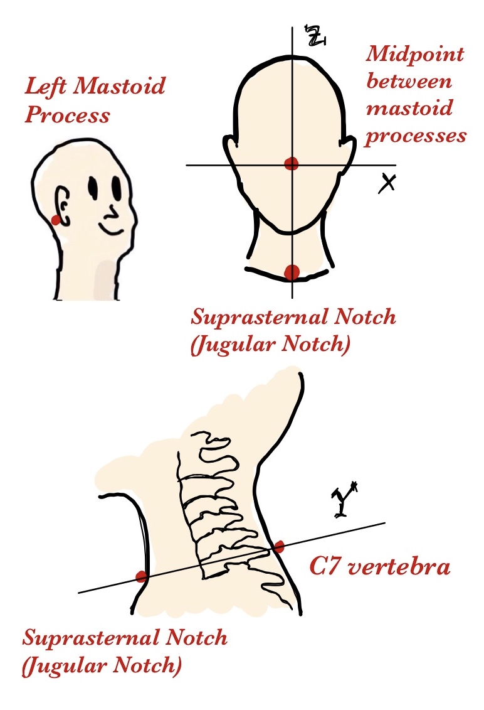
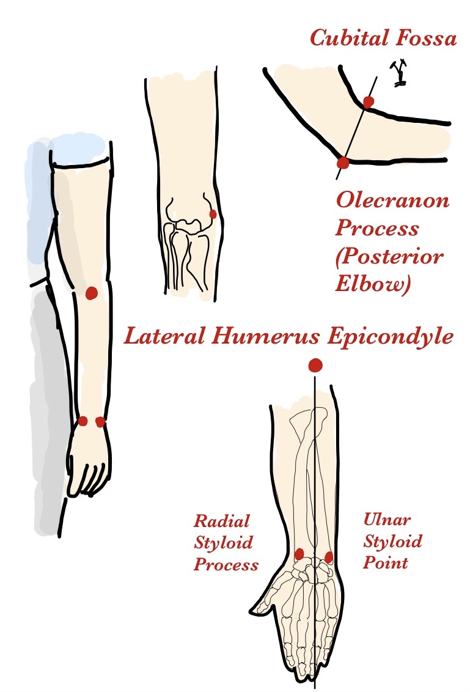
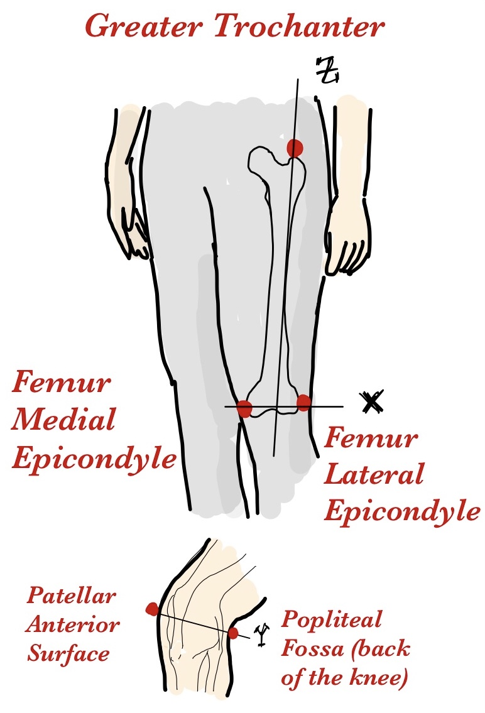
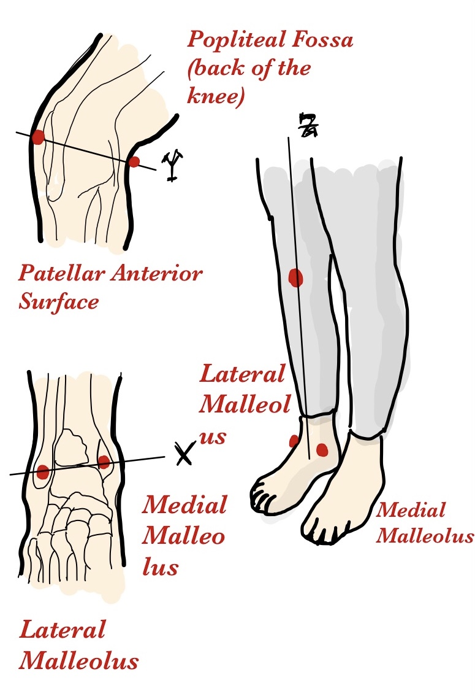
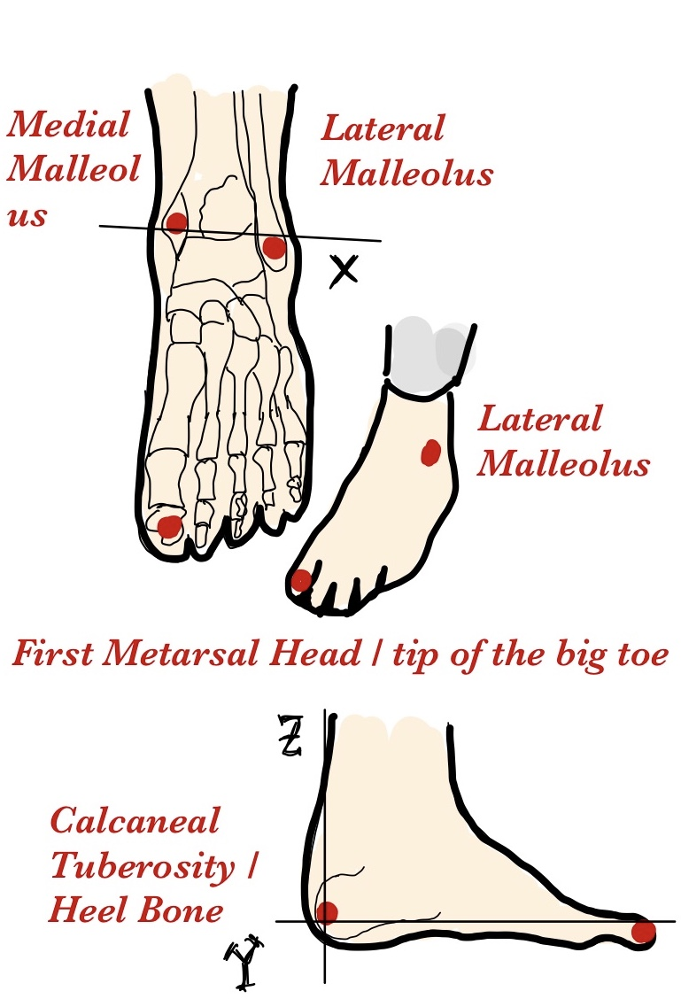

Human Body Segmentation


| Hanavan Body Part | HED Label | HED Description | Anatomical Description | Fiducials (Landmark Locations) | Coordinate System | Example IMU | Example Mocap | Landmark visualization |
|---|---|---|---|---|---|---|---|---|
| 1 | Head | The upper part of the human body, or the front or upper part of the body of an animal, typically separated from the rest of the body by a neck, and containing the brain, mouth, and sense organs. | The structure superior to the neck, encasing the brain, eyes, ears, nose, and mouth. It is demarcated by the skull, which separates the head from the neck at the base of the skull. | Nasion Inion Helix-Tragus Junction (HJ) LHJ RHJ Vertex Midpoint between mastoid processes (MMP) |
X: Left ear → right ear Y: Inion → Nasion Z: Right-hand rule (limits: MMP and Vertex) |
1. (50, 0, 50) | 1. (100, 100, 80) 2. (0, 100, 80) 3. (100, 10, 80) 4. (0, 10, 80) |
|
| ? | Neck | The part of the body connecting the head to the torso, containing the cervical spine and vital pathways of nerves, blood vessels, and the airway. | The anatomical region bounded by the base of the skull, and the clavicles inferiorly, containing vital structures such as the cervical vertebrae, spinal cord, carotid arteries, and trachea. | Midpoint between mastoid processes C7 vertebra Suprasternal Notch (Jugular Notch) |
X: right-hand rule (limits?) Y: C7 → Suprasternal notch Z: Suprasternal notch → Mastoid midpoint |
n/a | n/a |  |
| 2 | Torso-chest | The body excluding the head and neck and limbs. | The upper part of the torso, extending from the base of the neck to the diaphragm. It’s framed by the rib cage, which includes the ribs, sternum, and thoracic vertebrae. The thorax houses vital organs such as the heart and lungs. | Acromion processes Vertebra Prominens (C7) Xiphoid Process |
X: Left → Right acromion process Y: Vertebra Prominens → Xiphoid Process Z: Right-hand rule (limits: Xiphoid and C7) |
2. (50, 100, 70) | 5. (50, 100, 70) A.(100, 100, 30) B.(0, 100, 30) |
 |
| 3 | Abdomen | The body excluding the head and neck and limbs. | The lower part of the torso, situated between the thorax and the pelvis. It is bounded superiorly by the diaphragm and inferiorly by the pelvic girdle. The abdomen contains important digestive, urinary, and reproductive organs, and is supported by various abdominal muscles. | 1. Umbilicus (Navel) 2. Anterior Superior Iliac Spine (ASIS) 3. Posterior Superior Iliac Spine (PSIS) 4. Xiphoid Process |
X: Left → Right ASIS Y: Right-hand rule (limits: ASIS and PSIS) Z: Umbilicus → Xiphoid Process |
n/a | n/a | |
| 4 | (Right, Hand) | The distal portion of the upper extremity. It consists of the carpus, metacarpus, and digits. | The terminal part of the forearm, beginning at the wrist joint (where the radius and ulna meet the carpal bones) and extending to the fingertips, including the carpus, metacarpus, and phalanges. | Radial Styloid Process (RSP) Ulnar Styloid Process (USP) Third Metacarpophalangeal Joint (MCP): The knuckle of the middle finger |
X: RSP → USP Y: Right hand rule (limits: ?) Z: MCP → Midline RSP-USP |
n/a | 10. (100, 50, 50) | |
| 5 | (Left, Hand) | The distal portion of the upper extremity. It consists of the carpus, metacarpus, and digits. | The terminal part of the forearm, beginning at the wrist joint (where the radius and ulna meet the carpal bones) and extending to the fingertips, including the carpus, metacarpus, and phalanges. | Radial Styloid Process (RSP) Ulnar Styloid Process (USP) Third Metacarpophalangeal Joint (MCP): The knuckle of the middle finger |
X: USP → RSP Y: Right hand rule (limits: wrist depth, from dorsal to palmar surface at the midpoint RSP-USP?) Z: MCP → Midline RSP-USP |
n/a | 11. (0, 50, 50) |  |
| 6 | (Right, Upper-arm) | Portion of arm between shoulder and elbow. | The segment between the shoulder and elbow, outlined by the humerus bone. It starts at the glenohumeral joint and ends at the elbow joint where the humerus meets the radius and ulna. | Acromion Medial Humerus Epicondyle (MHE) Lateral Humerus Epicondyle (LHE) |
X: MHE → LHE Y: Right-hand rule (limits: most prominent point of the olecranon process at the back of the elbow (posteriorly) to the least prominent point of the cubital fossa (anteriorly)) Z: Perpendicular line from MHE-LHE → Acromion |
3. (100, 50, 70) | 6. (100, 50, 70) C. (100, 50, 0) |
|
| 7 | (Left, Upper-arm) | Portion of arm between shoulder and elbow. | The segment between the shoulder and elbow, outlined by the humerus bone. It starts at the glenohumeral joint and ends at the elbow joint where the humerus meets the radius and ulna. | Acromion Medial Humerus Epicondyle (MHE) Lateral Humerus Epicondyle (LHE) |
X: MHE → LHE Y: Right-hand rule (limits: most prominent point of the olecranon process at the back of the elbow (posteriorly) to the least prominent point of the cubital fossa (anteriorly)) Z: Perpendicular line from MHE-LHE → Acromion |
4. (0, 50, 70) | 7. (0, 50, 50) D. (0, 50, 0) |
|
| 8 | (Right, Forearm) | Lower part of the arm between the elbow and wrist. | Extends from the elbow to the wrist, demarcated by the radius and ulna. Begins at the elbow joint and ends at the wrist joint. | Radial Styloid Process (RSP) Ulnar Styloid Process (USP) Lateral Humerus Epicondyle (LHE) |
X: RSP → USP Y: Right-hand rule (limits: most prominent point of the olecranon process at the back of the elbow (posteriorly) to the least prominent point of the cubital fossa (anteriorly)) Z: perp of RSP-USP → LHE |
5. (100, 50, 30) | 8. (100, 50, 70) E. (50, 100, 0) |
|
| 9 | (Left, Forearm) | Lower part of the arm between the elbow and wrist. | Extends from the elbow to the wrist, demarcated by the radius and ulna. Begins at the elbow joint and ends at the wrist joint. | Radial Styloid Process (RSP) Ulnar Styloid Process (USP) Lateral Humerus Epicondyle (LHE) |
X: USP → RSP Y: Right-hand rule (limits: most prominent point of the olecranon process at the back of the elbow (posteriorly) to the least prominent point of the cubital fossa (anteriorly)) Z: perp of RSP-USP → LHE |
6. (0, 50, 30) | 9. (0, 50, 50) E. (50, 100, 0) |
 |
| 10 | (Right, Thigh) | Upper part of the leg between hip and knee. | The part of the lower limb extending from the hip to the knee, primarily composed of the femur. It starts at the hip joint (where the femur connects with the pelvic girdle) and ends at the knee joint. | Greater Trochanter Femur Medial Epicondyle (FME) Femur Lateral Epicondyle (FLE) |
X: FME → FLE Y: Right-hand rule (limits: least prominent point of the popliteal fossa at the back of the knee joint (posteriorly) to the most prominent point of the patellar bone while standing (anteriorly)) Z: perp of FME-FLE → Greater Trochanter |
7. (100, 50, 50) | 12. (100, 50, 50) | |
| 11 | (Left, Thigh) | Upper part of the leg between hip and knee. | The part of the lower limb extending from the hip to the knee, primarily composed of the femur. It starts at the hip joint (where the femur connects with the pelvic girdle) and ends at the knee joint. | Greater Trochanter Femur Medial Epicondyle (FME) Femur Lateral Epicondyle (FLE) |
X: FLE → FME Y: Right-hand rule (limits: least prominent point of the popliteal fossa at the back of the knee joint (posteriorly) to the most prominent point of the patellar bone while standing (anteriorly)) Z: perp of FME-FLE → Greater Trochanter |
8. (0, 50, 50) | 13. (0, 50, 50) |  |
| 12 | (Right, Lower-leg) | The part of the leg between the knee and the ankle. | Calf: The posterior segment of the lower leg, from the knee to the ankle. The calf muscles (gastrocnemius and soleus) overlay the tibia and fibula, starting below the knee joint and extending to the ankle. Shin: The anterior part of the lower leg, starting just below the knee joint and extending to the ankle. It primarily involves the tibia. | Lateral Malleolus (LM) Medial Malleolus (MM) Tibial Tuberosity |
X: MM → LM Y: Right-hand rule (limits: least prominent point of the popliteal fossa at the back of the knee joint (posteriorly) to the most prominent point of the patellar bone while standing (anteriorly)) Z: perp of MM-LM → Tibial Tuberosity |
9. (0, 50, 80) 11. (100, 50, 20) |
14. (100, 50, 80) G. (100, 50, 0) |
 |
| 13 | (Left, Lower-leg) | The part of the leg between the knee and the ankle. | Calf: The posterior segment of the lower leg, from the knee to the ankle. The calf muscles (gastrocnemius and soleus) overlay the tibia and fibula, starting below the knee joint and extending to the ankle. Shin: The anterior part of the lower leg, starting just below the knee joint and extending to the ankle. It primarily involves the tibia. | Lateral Malleolus (LM) Medial Malleolus (MM) Tibial Tuberosity |
X: LM → MM Y: Right-hand rule (limits: least prominent point of the popliteal fossa at the back of the knee joint (posteriorly) to the most prominent point of the patellar bone while standing (anteriorly)) Z: perp of MM-LM → Tibial Tuberosity |
10. (100, 50, 80) 12. (0, 50, 20) |
15. (0, 50, 80) G. (0, 50, 0) |
|
| 14 | (Right, Foot) | The structure found below the ankle joint required for locomotion. | The distal extremity of the lower leg, starting at the ankle joint (where the tibia, fibula, and talus meet) and extending to the tips of the toes. It includes the tarsus, metatarsus, and phalanges. | Calcaneal Tuberosity (CT, Heel Bone) First Metatarsal Head (FME, tip of the big toe) Lateral Malleolus (LM) Medial Malleolus (MM) |
X: MM → LM Y: CT → FME Z: Right-hand rule (limits: CT to MM-LM line) |
13. (50, 60, 80) | 16. (50, 100, 40) 18. (50, 0, 50) |
|
| 15 | (Left, Foot) | The structure found below the ankle joint required for locomotion. | The distal extremity of the lower leg, starting at the ankle joint (where the tibia, fibula, and talus meet) and extending to the tips of the toes. It includes the tarsus, metatarsus, and phalanges. | Calcaneal Tuberosity (CT, Heel Bone) First Metatarsal Head (FME, tip of the big toe) Lateral Malleolus (LM) Medial Malleolus (MM) |
X: LM → MM Y: CT → FME Z: Right-hand rule (limits: CT to MM-LM line) |
14. (50, 60, 80) | 17. (50, 100, 40) 19. (50, 0, 50) |
 |
NOTE: Joint markers should be annotated in the same coordinate system as their proximal body part. For example, the right shoulder joint marker should be annotated in the same coordinate system as torso, and the right elbow joint marker should be annotated in the same coordinate system as the right upper-arm.